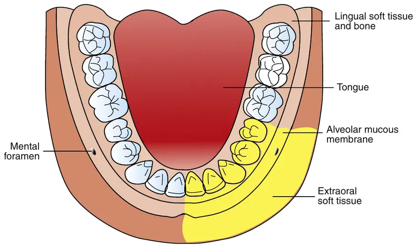
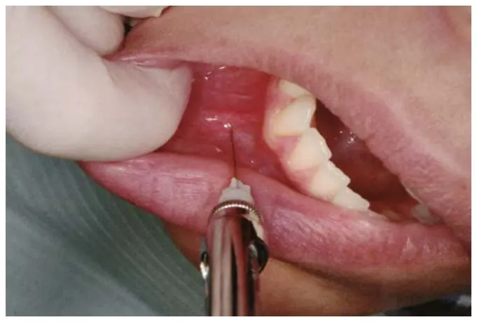

نسخه استخراجشده؛ ترجمه یا تأیید علمی انجام نشده است. وضعیت: captured
خانمی میانسال برای ترمیم ضایعهی سرویکال کانین و هر دو پرمولر پایین سمت چپ آمده و میگوید از بیحسی زبان در جلسهی قبل خیلی اذیت شده است. راهی هست که این سه دندان بیحس شوند ولی زبانش نه؟

عصب اینسیزیو ادامهی عصب آلوئولار تحتانی در داخل استخوان است. در سوراخ منتال، عصب آلوئولار تحتانی دو شاخه میشود: منتال بیرون میآید و اینسیزیو در کانال به جلو ادامه میدهد و پالپ دندانهای جلوی سوراخ را عصبدهی میکند.
بافت نرم لینگوال و زبان بیحس نمیشوند. اگر سوراخ منتال زیر پرمولر اول باشد، پرمولر دوم ممکن است بیحس نشود.
وقتی بلاک عصب آلوئولار تحتانی (IANB) موفق است، عصب اینسیزیو هم بیحس است و این بلاک لازم نیست. جای این بلاک وقتی است که فقط دندانهای جلوی سوراخ منتال را درمان میکنی، بهخصوص وقتی درمان دو طرف فک را میگیرد. این بلاک را میشود همتای بلاک آلوئولار فوقانی قدامی (ASA) در فک پایین دانست، همانطور که بلاک منتال همتای بلاک اینفرااوربیتال است.
محل ورود و جای نشستن مثل بلاک منتال است: سوزن کوتاه گیج ۲۷، دهان نیمهبسته، ورود در وستیبول کنار کانین یا پرمولر اول به سمت سوراخ منتال، بول رو به استخوان.

اشتباه رایج: فرو بردن سوزن داخل سوراخ منتال. لازم نیست، تزریق را سختتر میکند و خطر آسیب به عصب و رگها را بالا میبرد. شایعترین علت بیحس نشدن پرمولر دوم هم فشار ناکافی پس از تزریق است، نه جای سوزن.
بیحسی لب فقط یعنی عصب منتال گرفته است. پیش از تراش، پالپ را با تست سرما یا EPT بسنج: پاسخ ندادن به حداکثر خروجی EPT در دو تست پشتسرهم با فاصلهی دستکم ۲ دقیقه، در دندان بدون پالپیت یعنی بیحسی پالپ تقریباً قطعی است. اگر محلول کافی به سوراخ نرسیده، دوباره تزریق کن و فشار بده.